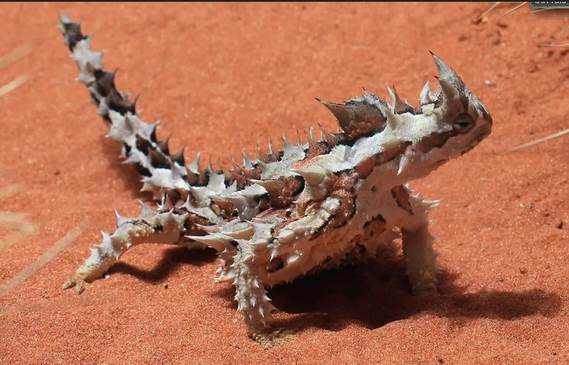
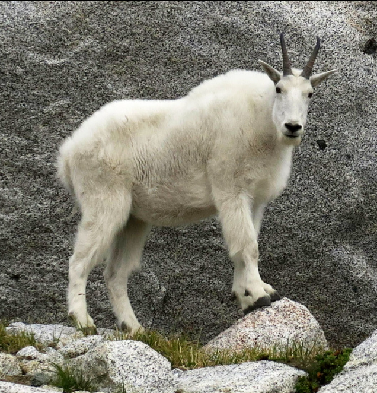

Ananth
Living beings survive in forests, deserts, and mountain regions because they have special adaptations. These adaptations help animals and plants find food, protect themselves, and adjust to extreme climates like heat, cold, or low nutrition. Different habitats demand different survival features.
In forests, animals and plants show many adaptations that help them survive in complex environments. Forest geckos have sticky toe pads called lamellae, which help them climb trees easily. They use camouflage to hide from predators like lions and foxes. Their large eyes help them see at night, allowing them to escape danger. Plants like the Venus flytrap grow in soil with poor nutrients, so they feed on insects to survive and grow properly.
In deserts, animals adapt to extreme heat and lack of water. Desert lizards survive by burrowing, basking, and using specialized toes for walking on sand. They have salt-sneezing glands and conserve water by storing fat in their tails. Crocodiles, though different from lizards, have more scales on their outer body, which protect them. They also have powerful jaws and use camouflage to survive in their surroundings.
In mountain regions, animals face cold temperatures and low oxygen levels. Yaks are well adapted with thick fur, large bodies, and strong lungs, which help them survive in high altitudes. They do not have sweat glands due to the cold climate. Mountain goats also have thick fur, but it is thinner compared to that of yaks, helping them stay warm while moving easily on mountains.
Different habitats like forests, deserts, and mountains require different adaptations. Animals and plants survive by developing special features such as camouflage, thick fur, water conservation, and unique feeding habits. These adaptations help living beings thrive even in the most challenging environments.